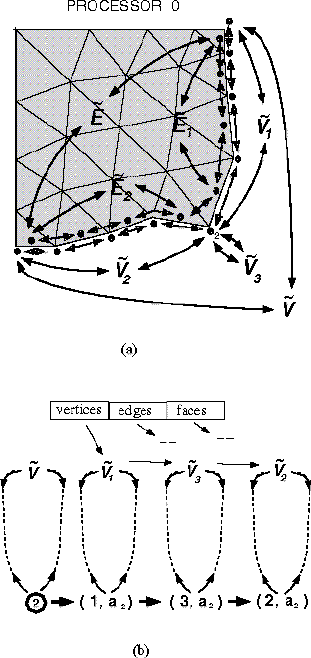

PMDB Interprocessor Boundary Structures
PMDB Interprocessor Boundary Structures

Doubly linked structures of partition boundary entities:
(a) global view and (b) partition boundary view. E and V denote
lists of all partition boundary edges and vertices, respectively.
Symbols with subscripts indicate lists of entities adjacent to a particular
processor. The circled number two in (b) corresponds to the small number
two in (a). The ordered pairs are processor-address pairs.